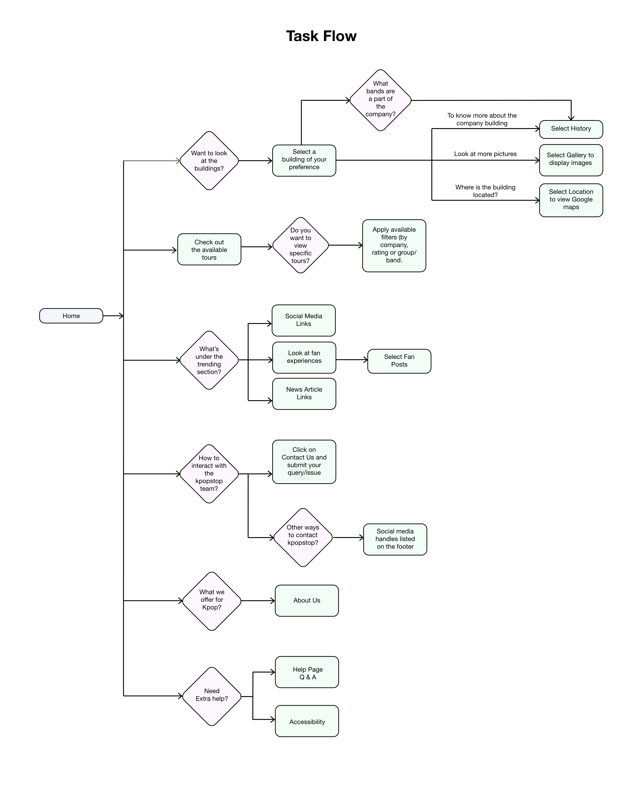
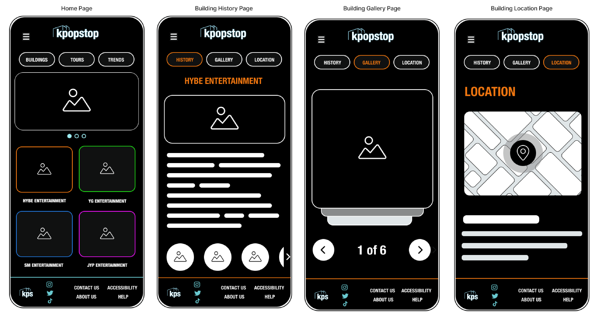

UX/UI Design
User-Centric Design:
To ensure our platform resonated deeply with users, we adopted an iterative design process that put
users at the forefront. The insights gathered from interviews guided us in refining our focus. With
precision, we identified key areas of information and content that would captivate our audience.
This
process not only honed our direction but also refined our understanding of the specific segments
within
our target market.
Our aim was to create an immersive experience that bridges K-pop enthusiasts with the world they admire. Through thoughtful user experience design, we crafted intuitive navigation and interactions that effortlessly guide users through the vibrant world of K-pop company buildings. Our platform's architecture was carefully curated, allowing users to explore affiliated K-pop groups seamlessly.
Wireframes:
In the early stage of our designs, we used hand-drawn low-fidelity (low-fi) emphasizing usability
and
clarity. We sketched out the basic arrangement of navigation menus, content sections, and
interactive
elements. Typography, though basic, played a crucial role in establishing hierarchy and readability.
After gaining an idea of key elements and page layout we moved to digital low-fi wireframes. These digital sketches were the blueprint for our user interface, representing the foundational structure of our platform. During this phase, we focused on the core elements and layout, prioritizing functionality and user flow over aesthetics.


As our design vision evolved, we transitioned to high-fidelity (high-fi) wireframes. These wireframes were more refined, incorporating the visual aesthetics and stylistic choices that we drew from the rich and diverse world of K-pop. In the high-fi wireframes, every design element received meticulous attention. Typography choices were refined to align with the specific aesthetics of different sections. Color palettes were curated to convey the essence of both K-pop as a whole and the unique attributes of each company building.
